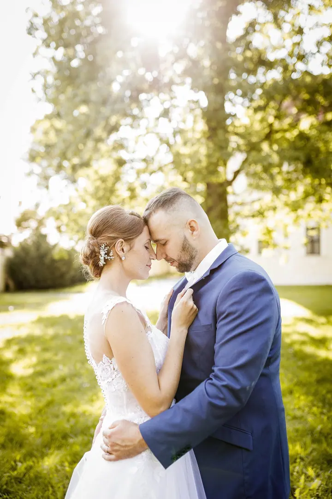
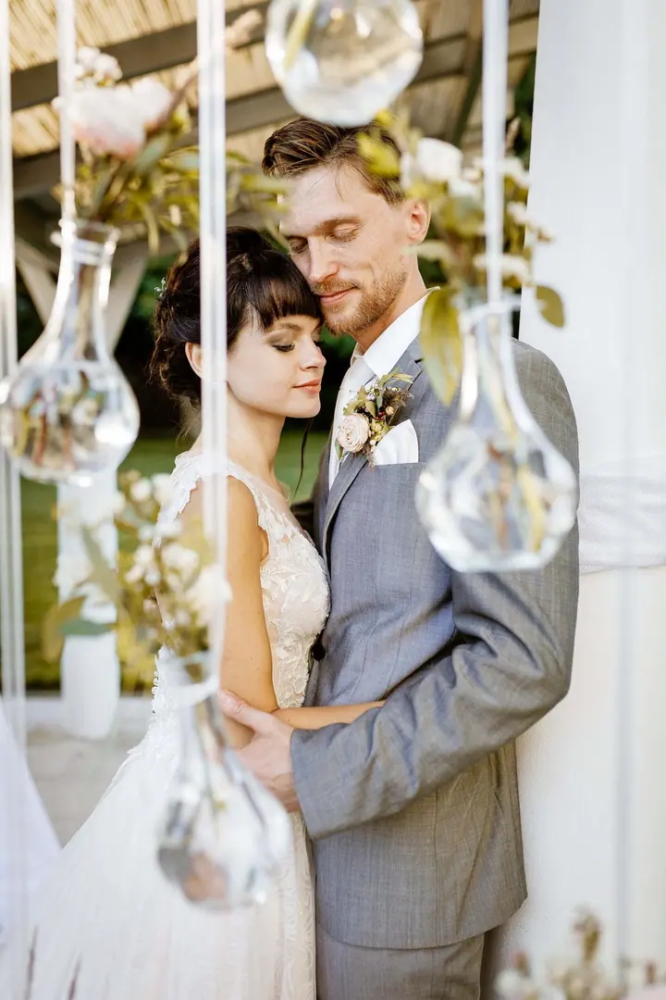
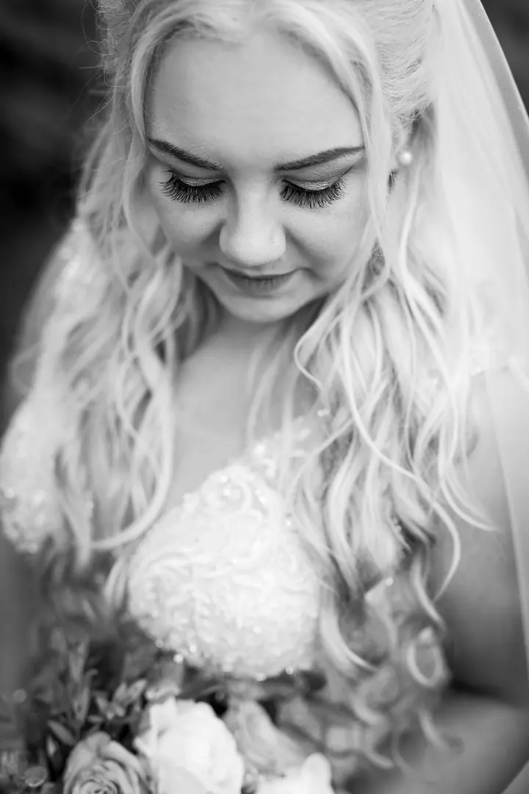
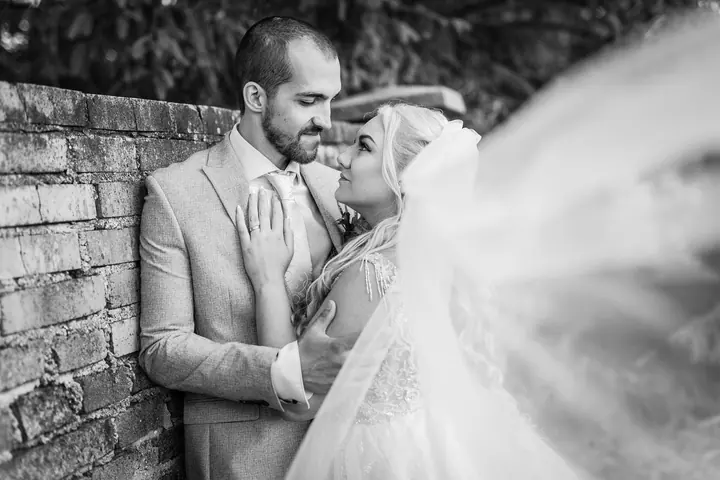

jedna
Svatební fotografie
Fotím 12 hodin, od příprav až do večerní hostiny. Součástí je předsvatební konzultace, online galerie a návrh fotoalba zdarma.


Jmenuji se Ondřej Totzauer a pod značkou HOTOFOTO fotím svatby v Plzni a okolí. Nejvíc mě na nich baví emoce, které jsou pokaždé jiné. Když budete chtít, přivedu s sebou i kameramana a z vašeho dne vznikne krátký klip.
Více o mně
Co dělám
jedna
Fotím 12 hodin, od příprav až do večerní hostiny. Součástí je předsvatební konzultace, online galerie a návrh fotoalba zdarma.
dvě
Na svatbu přijedu s kameramanem, takže kromě fotek dostanete i 3–5minutový klip z celého dne. Natáčíme a fotíme od příprav do večerní hostiny.
Každá svatba je jiná, ale vždy krásná.

Za objektivem
Jsem svatební fotograf z Plzeňska a svatby fotím pod značkou HOTOFOTO. Za tu dobu jsem fotil v zámeckých parcích, na statcích, ve mlýnech i v hotelích, od Mirošova a Rokycanska až po Tachov nebo Slovensko.
Celý den s vámi strávím od příprav až po večerní hostinu. Předtím se ale potkáme na konzultaci, kde se seznámíme, probereme vaše představy a případně doladíme harmonogram. Když chcete i video, přijedu s kameramanem.
Na fotky dávám pozor, jako by byly moje. Sám jsem už několikrát nešťastně přišel o důležitá data, proto vaše fotky dva roky zálohuji na našem serveru. Svatební rady a tipy sdílím na blogu a ve svatebním podcastu.
Ondřej
Napište mi jméno, termín svatby a jaký balíček vás zajímá. Ozvu se vám, jestli je termín volný.
Osobně se seznámíme, probereme vaše představy a přání a případně doladíme harmonogram dne.
Fotím (a s kameramanem natáčíme) od příprav až do večerní hostiny, celkem 12 hodin.
Fotky dostanete v soukromé online galerii, kterou snadno pošlete známým. Návrh fotoalba je zdarma.
Portfolio
Otázky
Balíček FOTO stojí 25 000 Kč, balíček FOTO + VIDEO s kameramanem a 3–5minutovým klipem 39 000 Kč.
Časová dotace obou balíčků je 12 hodin, takže stihneme vše od příprav do večerní hostiny.
V soukromé online galerii. Stačí poslat odkaz a fotky uvidí i vaše rodina a přátelé. Digitální kopie navíc dva roky zálohuji na serveru.
Ano, návrh fotoalba dostanete zdarma. Na druhé a třetí album, třeba pro rodiče, máte slevu 25 %.
Napište pár vět o tom, co si představujete. · +420 732 203 443